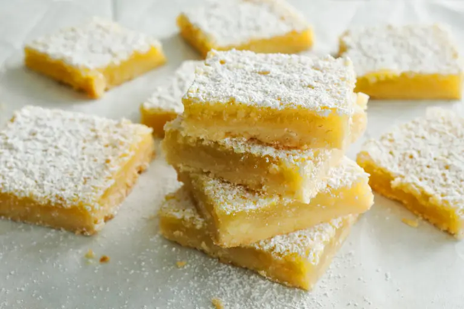

Lemon Squares
Home

Description
The recipe for these sweet, tart squares, adapted from the “Wellesley Cookie Exchange Cookbook” by Susan
Mahnke Peery, was published in The Times in December 1990, part of a Christmas cookie roundup. But they can
be made for just about any occasion, whether you’re in the holiday spirit or just craving something with a
little pucker. The buttery shortbread mellows a lemon topping, as does the dusting of confectioners' sugar.
Make it to cap off a weeknight dinner, or for a weekend afternoon snack, paired with a cup of tea.
Ingredients
- 2cups/256 grams flour, plus ¼ cup/32 grams
- ½cup confectioners' sugar/61 grams, plus 2 teaspoons
- 1teaspoon kosher salt
- 1cup/227 grams (2 sticks) unsalted butter, melted
- 4eggs
- 2cups/400 grams granulated sugar
- ⅓cup/80 milliliters lemon juice (from about 1 to 2 lemons)
- ½teaspoon baking powder
Steps
- Heat oven to 350 degrees. In a medium bowl, whisk together two cups flour, ½ cup confectioners' sugar
and salt. Add melted butter and stir to thoroughly combine. Spread with clean hands in an even layer
into a 9-by-13-inch pan and bake for 25 minutes.
- Meanwhile, in a medium bowl, whisk together eggs, granulated sugar, lemon juice, baking powder and
remaining flour. Pour onto the hot baked shell and bake for an additional 20 to 25 minutes, or until
just set. Using a small, fine meshed sieve, sift remaining confectioners' sugar on top when cool. Cut
into equal bars.